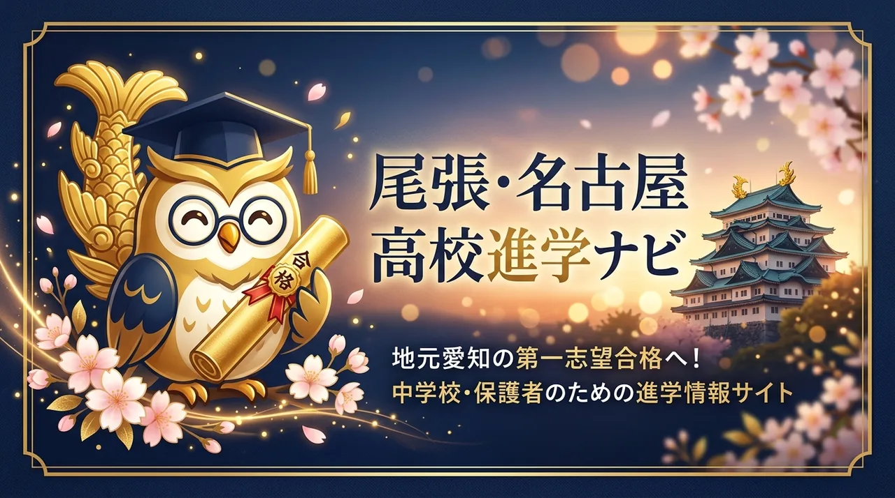

金のシャチホコ × フクロウ。愛知の高校入試を案内する、このサイトの案内役です。
名古屋城の金のシャチホコと、知恵の象徴フクロウが合わさって生まれた、このサイトの案内役。卒業帽をかぶって、右手に鉛筆、左手に合格証書を持っています。「上へ、飛び出そう」が口ぐせです。
はじめまして。ぼく、シャチフク。愛知の高校入試って、複合選抜にW出願、私立の併願、学費の補助金…って、調べることが多くて途中で心が折れそうになるよね。だから「ひとつのページで、迷わず決められる」案内役になりたくて、このサイトに住んでいます。

| なまえ | シャチフク先輩（シャチホコフクロウ） |
|---|---|
| モチーフ | 名古屋城の金のシャチホコ ＋ フクロウ（知恵・「不苦労」） |
| すがた | 卒業帽、右手に鉛筆、左手に合格証書（桜のリボン付き） |
| ひとこと | 「上へ、飛び出そう」 |
| せいかく | せっかちだけど世話焼き。数字と条件を並べて整理するのが得意。がんばりを認めるのがうまい。 |
| にがて | 「なんとなく」で決めること。あいまいな噂話。 |
| すきなもの | 名古屋めし（味噌カツ・ひつまぶし）、朝の教室の静けさ、合格発表のあの空気 |
| しごと | 内申点と出願パターンの整理、志望校の絞り込み、保護者への説明づくり |
「シャチフク」は、2つの生きもののいいところを足してできた名前です。
名古屋城のてっぺんで、天を指して立つ金のシャチホコ。尾張・名古屋の子が「上を目指す」イメージそのものです。しっぽが魚、顔がトラ…という不思議な姿も、シャチフクの「ちょっと変だけど憎めない」感じの由来。
夜も目を開けて獲物をねらうフクロウは、昔から知恵の象徴。「不苦労（苦労しない）」という語呂でも親しまれ、受験生の縁起物としても人気です。夜遅くまで過去問を解くきみの隣にいるのは、この目があるから。
右手の鉛筆は「今日の1問」、左手の合格証書は「いつか手にする答え」。どちらも特別な道具じゃなくて、毎日の積み上げの象徴です。桜のリボンは、愛知の入試が桜の季節に終わることから。
むずかしい制度も、順番に並べれば決められます。まずは気になるところから。
2026年から、40秒でわかる縦型ショート動画「シャチフク先輩の40秒講義」を配信しています。通学のスキマ時間に、1本1テーマだけ。
※ シャチフク先輩のプロフィールはキャラクター設定です。記事の内容とあわせて、楽しく読んでもらえたらうれしいです。
数字がわかると、不安は「作戦」に変わります。0秒で終わるので、いま開いてみてね。